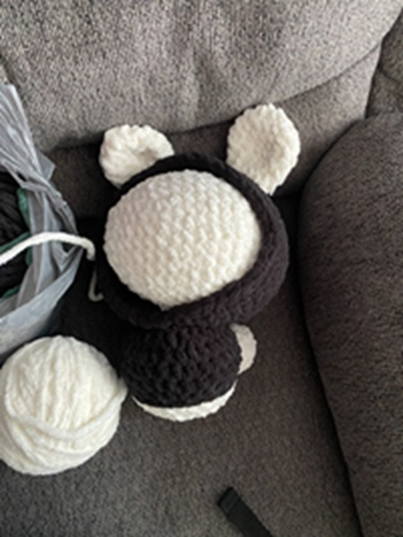

Crochet has been traced back to the 15th-17th century and is believed to have originated from Arabia. However, this has not been confirmed as many cultures have crochet in thier history. While very much similar to knitting, the difference is the number of hooks being used and the technique. Crocheting allows for a more creative method, as many people are able to crochet clothes, stuffed animals, house decor, and much more.
One of my hobbies is crocheting, I am self taught. I started learning how to crochet last year around February. My first project was to make a strawberry. I followed this tutorial, which was very simple for beginners.
I mainly crochet during my freetime, and take breaks when school starts. I have completed a variety of projects, with ranging difficulties.
I often finish my projects but forget to take pictures. However, this is a picture of a nearly done bunny with a hoodie.